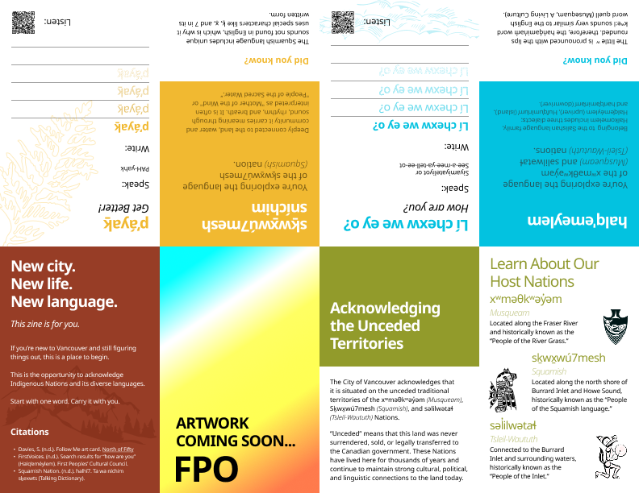
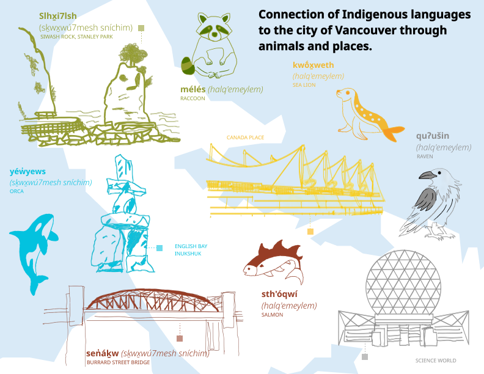
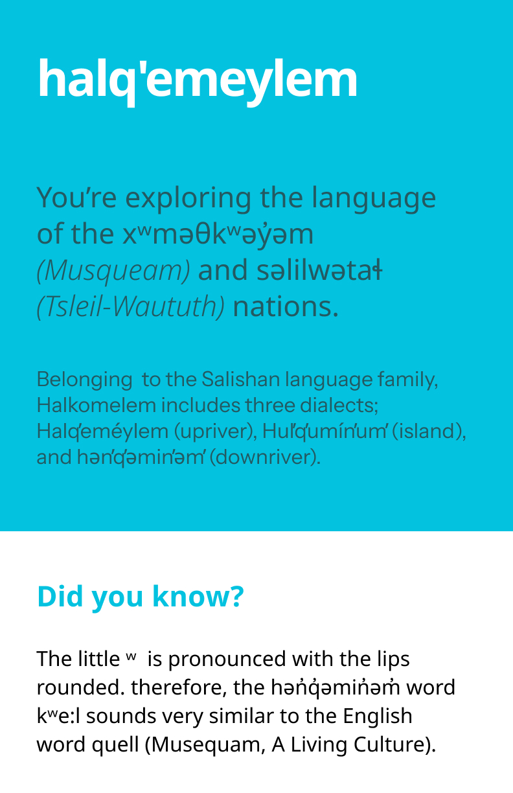
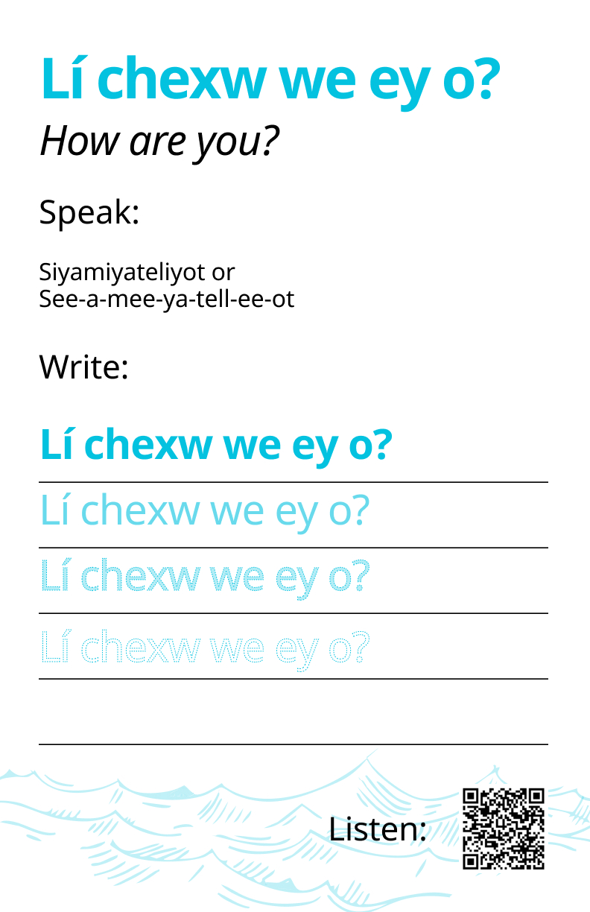
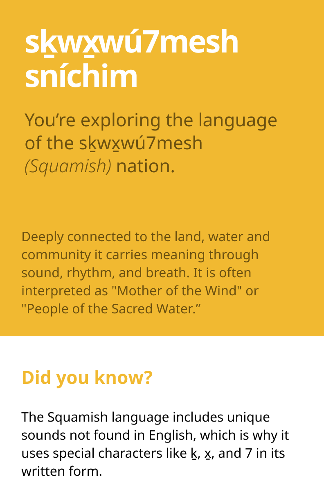
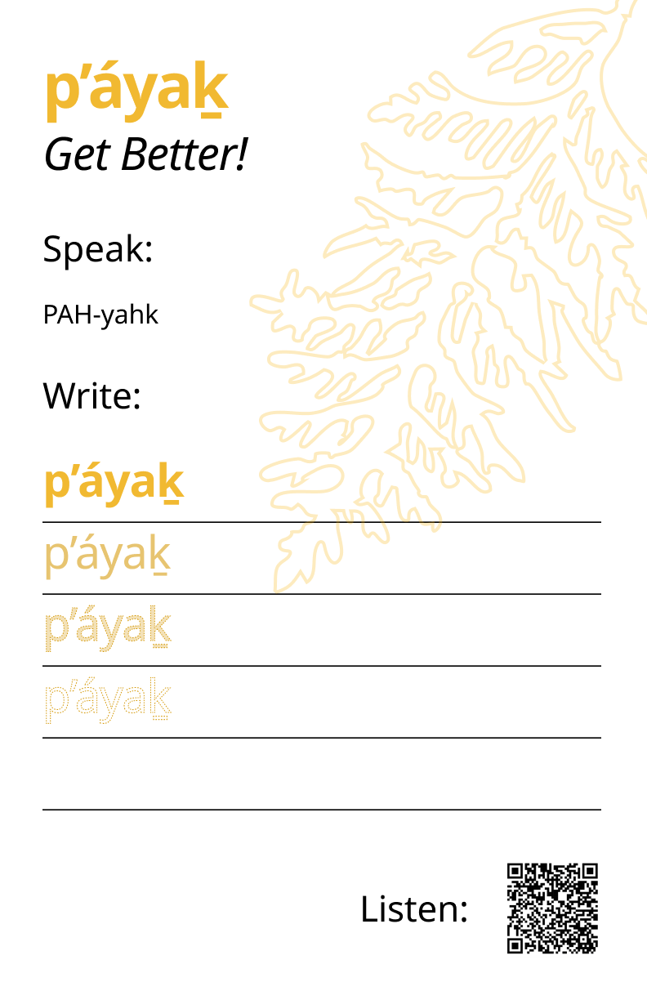

Publication Design
Indigenous Languages
Print Zine
Team Lead
Language in the Landscape
A Pocket Zine for Newcomers — Publication Design & Indigenous
Language Awareness
A foldable, pocket-sized zine designed to help newcomers in Vancouver
connect with Indigenous languages and the unceded territories they now
call home. Client: CityStudio Vancouver.
8
Zine pages
Fully designed & printed
2
Indigenous languages
halq'emeylem & sḵwx̱wú7mesh
3
Team members
Design-led collaboration
1
Client
CityStudio Vancouver
The Project
Vancouver is built on the unceded territories of the Musqueam,
Squamish, and Tsleil-Waututh Nations — yet many newcomers encounter
land acknowledgments without ever truly understanding their meaning.
This project shifts that from passive hearing to active learning.
8
Pages designed
Cover, acknowledgment, host nations, two language learning
spreads, and a full Indigenous language map of Vancouver
Active
Learning over listening
Speak, write, and listen — three interaction types built into the
physical zine through prompts, practice lines, and QR audio codes
Portable
Everyday spaces
Designed for transit stations, campuses, airports, and community
centres — no app or internet required
"We redefined the problem by shifting focus from passive
acknowledgment to active learning — giving newcomers a way to engage
with Indigenous language through meaning, pronunciation, and
personal reflection."
Inside the
Publication
The zine unfolds across 8 pages, each with a distinct purpose —
guiding readers from acknowledgment through language learning to
personal reflection and finally a reimagined map of Vancouver.
Page 01
Cover — Indigenous Artwork
Artwork by Davies S. as the cover — a surprise entry point rather
than a titled front page. Vibrant colours draw readers in and signal
that this is something different from an institutional pamphlet.

Front page — full layout with all zine panels visible when
unfolded

Back page — Indigenous language map of Vancouver landmarks and
animals
Page 02
Acknowledging the Unceded Territories
Official City of Vancouver text explaining what "unceded" means
and why it matters. Using the exact institutional language
grounds the zine in accuracy while making it accessible to
someone encountering the concept for the first time.
Page 03
Learn About Our Host Nations
Introduces the Musqueam (xʷməθkʷəy̓əm), Squamish (sḵwx̱wú7mesh),
and Tsleil-Waututh (səlilwətaɬ) Nations — their names,
traditional territories, and the meanings behind those names.
Pages 04 – 05
halq'emeylem — Musqueam Language
Teaches "Lí chexw we ey o?" (How are you?) from the Musqueam and
Tsleil-Waututh language family. Each spread includes phonetic
pronunciation guides, fading practice writing lines, a "Did You
Know?" fact, and a QR code linking to audio.

halq'emeylem intro — language context, dialect overview, and Did
You Know? fact

Practice spread — speak, write, and listen via QR code audio
Pages 06 – 07
sḵwx̱wú7mesh sníchim — Squamish Language
Teaches "p'áyak" (Get Better!) from the Squamish language — deeply
connected to land, water, and community. Same interactive structure:
speak, write, and listen via QR code.

sḵwx̱wú7mesh sníchim intro — language identity, meaning, and Did
You Know? fact

Practice spread — speak, write, and listen via QR code audio
Page 08 — Back Cover
Indigenous Language Map of Vancouver
Reimagines Vancouver through Indigenous languages — familiar
landmarks paired with their Squamish and Musqueam names. Burrard
Bridge becomes seṅáḵw, orcas become yéwyews, salmon become
sth'óqwí. The map makes language visible in the city itself.
Intentional &
Approachable
Every decision — format, colour, typography, interaction — was made to
lower barriers and invite participation without overwhelming.
📄
Zine format over digital
No app download, no battery required. Tangible and portable —
it exists in the everyday spaces where newcomers already are,
and can be revisited at any pace.
🎨
Colour palette inspired by land and water
Teal for water, gold for warmth and land, earthy red for
community history. Each section is colour-coded — colour here
doesn't just organise, it carries meaning.
🔤
BC Sans typeface
Chosen for accessibility and readability across all hierarchy
levels. A locally rooted typeface for a locally rooted subject
— legible at small sizes for the pocket format.
🔊
QR code audio support
Optional listening via QR codes lets users hear correct
pronunciation without relying on phonetics alone — especially
important for sounds that don't exist in English.
✍️
Fading writing practice lines
Fading lines from bold to ghost invite users to trace and
write language phrases — turning a passive read into active,
personal participation.
💡
"Did You Know?" language facts
Short contextual facts — like why Squamish uses special
characters ḵ, x̱, and 7 — add delight and help readers
understand why the language looks the way it does.
Iterative &
Research-Informed
Multiple rounds of wireframing, content refinement, and physical print
testing — guided by a clear design principle: simplify until nothing
feels overwhelming.
01
Problem redefinition
Shifted from "representing Indigenous land acknowledgment" to
"helping newcomers actively learn" — a crucial reframe that
shaped every subsequent decision.
02
Research & content sourcing
All language content sourced from Indigenous-led resources:
FirstVoices, the Squamish Nation Talking Dictionary, and the
City of Vancouver's official reconciliation pages. Content
presented unchanged and uninterpreted.
03
Content-heavy wireframes → simplification
Early versions were dense and overwhelming. Stripped back,
reduced clutter, and established a clear reading flow:
acknowledgment → learning → reflection → map.
04
Visual system development
Finalised BC Sans hierarchy, colour palette, watermarks,
patterns, and illustrations through multiple rounds of print
testing until everything felt consistent and meaningful in hand.
05
Multiple print iterations
Physically printed and tested across many iterations — layout,
colour accuracy, legibility, and fold structure all required
real-world testing that digital screens couldn't replicate.
06
Final delivery to CityStudio Vancouver
Presented as a speculative, scalable design artifact — a
starting point for potential Indigenous-led implementation
rather than a finished product claiming authority.
Responsible &
Positionality-Aware
Working with Indigenous languages as non-Indigenous designers required
careful attention to representation, accuracy, and the limits of our
authority.
📚
Indigenous-led sources only
All language content from FirstVoices, the Squamish Nation Talking
Dictionary, and official City of Vancouver reconciliation pages —
presented unchanged.
🎓
Learners, not experts
The zine positions itself as a starting point, not a comprehensive
source. We do not speak on behalf of Indigenous communities or
claim authority over this knowledge.
🚫
No decorative appropriation
Indigenous visuals and symbols were not used for decoration. Focus
stayed on the connection between language, land, and community —
not aesthetic borrowing.
🤝
Consent-based framing
The zine is explicitly framed as speculative and exploratory. Any
real implementation would need to be Indigenous-led,
community-guided, and consent-based.
✅
Official text verbatim
The acknowledgment page uses the City of Vancouver's exact wording
— not paraphrased. Accuracy was more important than editorial
voice on content we had no authority to rewrite.
🌱
Entry point, not endpoint
Designed to spark curiosity and direct users toward deeper,
community-led resources — not to replace them.
Language as
Place
The zine's visual language makes a single argument: Indigenous
language is inseparable from the land it names. Every design choice
reinforces that claim.
🌿
Colour as ecology
Teal for water, gold for land and warmth, earthy red for
community and history. Colour here doesn't just organise the
zine — it connects language to the natural world it describes.
🗺️
The Indigenous language map
The back page reimagines Vancouver's landmarks through
Indigenous language — familiar places made newly visible through
their original names. Burrard Bridge becomes seṅáḵw. Orcas
become yéwyews.
✋
Interactivity as participation
Writing practice lines and QR codes turn readers into
participants. The zine is not something you consume — it's
something you do, even briefly. Co-design embedded in the
physical format itself.
📖
Slow reading over scanning
The physical foldable format encourages slower, more deliberate
reading than a digital screen. Each fold reveals the next
section — pacing the experience and preventing overwhelm.
What I Learned
Leading this project deepened my understanding of ethical design
practice, publication design for physical formats, and how design can
support — without claiming to replace — community-led work.
Ethical design in practice
Working with Indigenous content required a level of care and
humility that went beyond typical design briefs. Every content
decision had to be checked against: do we have the authority to
present this this way?
Physical format constraints
Designing for a foldable zine meant every panel had to work
independently and as part of the whole — a constraint that forced
clarity and economy in every layout decision.
Leading a design team
As team leader, I coordinated research, content decisions, and
visual direction across three people — learning how to align a
team around shared design principles rather than just dividing
tasks.
Simplicity as a design skill
The hardest work was removing content, not adding it. Early
versions were overwhelming — learning when to cut was as important
as knowing what to include.
Future Iterations
🤝
Direct Indigenous community collaboration
The most important next step — any real implementation must be
led by and developed with Indigenous communities, not designed
for them from the outside.
🌐
Digital companion experience
A lightweight web version that expands on the audio and includes
more language phrases — extending the zine's reach without
replacing the physical experience.
📍
Neighbourhood-specific editions
The zine framework is scalable — editions tailored to specific
Vancouver neighbourhoods, each highlighting the Indigenous names
and histories most relevant to that area.
"Start with one word. Carry it with you."
Tools & Methods
Adobe InDesign
Adobe Illustrator
BC Sans Typography
Print Production
QR Code Integration
FirstVoices
Co-design Principles
Iterative Prototyping